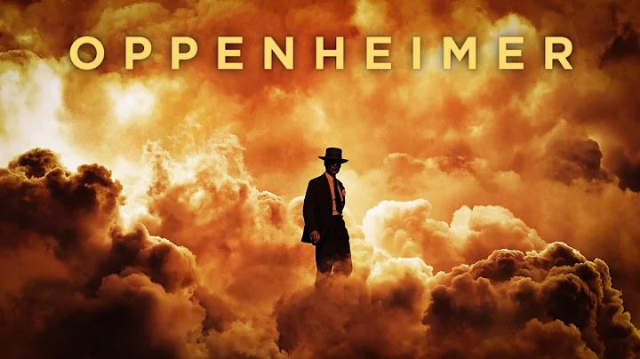
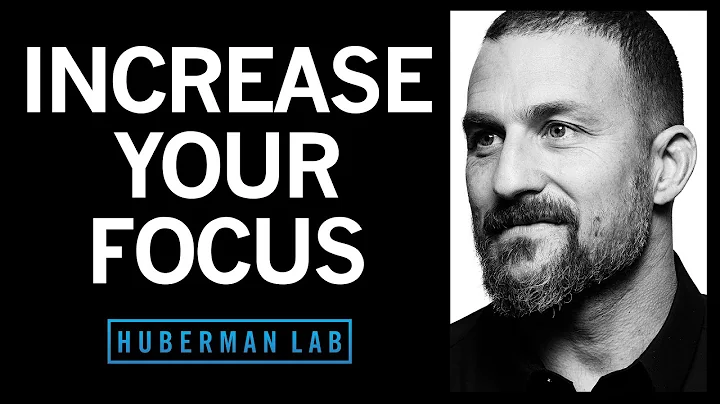
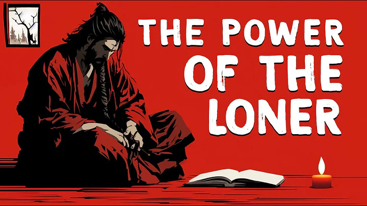
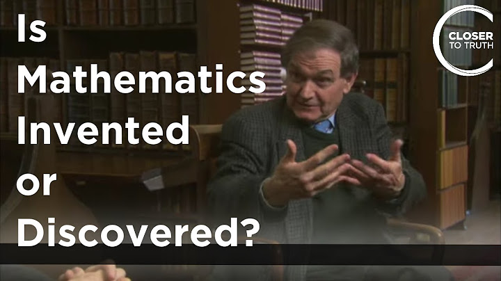
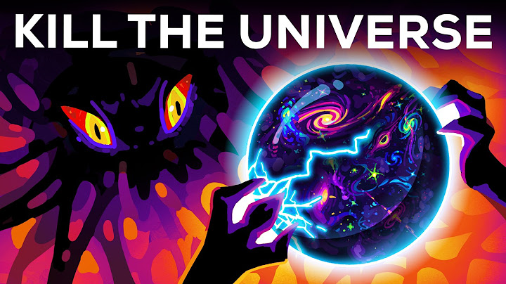

12:20

Oppenheimer - Concentration Music (Extended)
551k views · 4 months ago

15:12

How to Focus to Change Your Brain
2.2M views · 2 years ago

8:15

The Power of the Loner
6M views · 11 months ago

16:21

Is Maths invented or discovered?
4.4M views · 2 years ago

10:37

Hanz Zimmer Why do we fall
9M views · 4 years ago

13:22

How to distroy the universe
12.2M views · 1 years ago